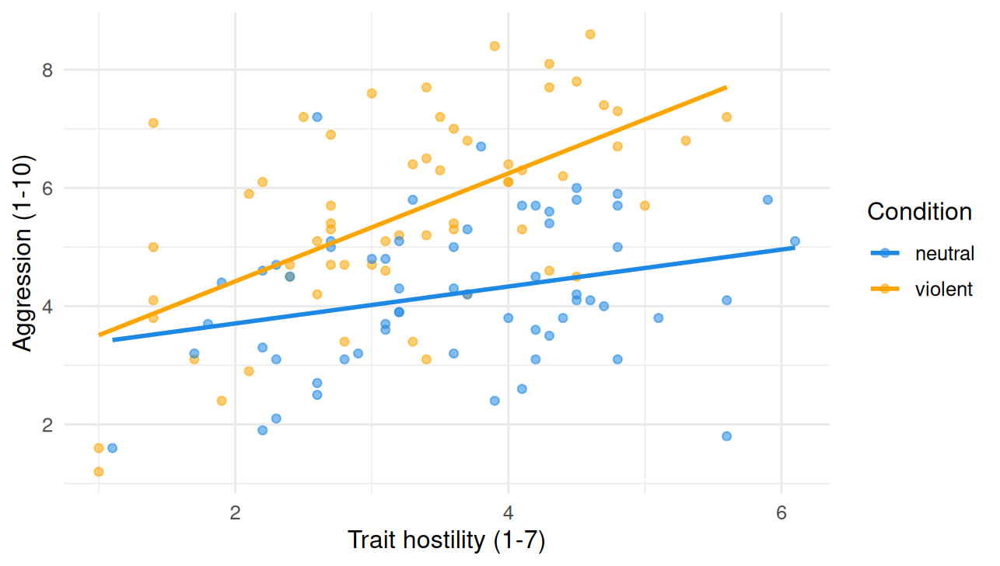

18Moderation: when one predictor depends on another
18.1 Overview
Chapter 17 added multiple predictors to the regression model. The model in Chapter 17 still assumed that the effect of each predictor was the same for everyone: the slope of trait_hostility was the same number whether the participant was in the violent or the neutral condition; the slope of hours_weekly was the same number for low-hostility and high-hostility participants. The model produced parallel lines.
This chapter relaxes that assumption. In many research questions, the effect of one predictor depends on the value of another. Maybe violent video games increase aggression, but only for participants who are already high in trait hostility. Maybe a persuasion technique works on inattentive listeners but not on attentive ones. These are claims about moderation (also called an interaction effect), and they are handled by adding one more term to the regression equation.
By the end of the chapter you will:
understand what an interaction term is and what it captures,
fit an interaction model in R with the * operator in the formula,
unpack the model into separate equations for each value of the moderator,
interpret an interaction plot visually,
distinguish moderation (X-Y depends on M) from mediation (X affects Y through M), which is a different concept and beyond the scope of this book.
It produced two parallel lines, one per condition, with the same slope of trait_hostility. That single slope says: hostility predicts aggression in exactly the same way regardless of which video game the participant played.
But this might not match reality. A natural psychological hypothesis is that violent video games amplify the effect of trait hostility: high-hostility participants get pushed even further toward aggression after playing a violent game than they would after a neutral one, while low-hostility participants are not much affected by which game they played.
If this is the case, the slope of trait_hostility should be different in the two conditions: steeper in the violent condition than in the neutral one. The two regression lines on the plot would not be parallel; they would diverge. That divergence is what an interaction captures.
18.3 Adding an interaction term
The way to allow a different slope per condition is to add an interaction term: the product of the two predictors.
\(b_1\) (the slope of trait_hostility when conditionviolent = 0, i.e., in the neutral condition),
\(b_2\) (the difference in intercept between violent and neutral),
\(b_3\) (the interaction term: how much the slope of trait_hostility changes when moving from the neutral condition to the violent condition).
This last coefficient is the new thing. If \(b_3\) is zero, the slope of hostility is the same in both conditions and we are back to Chapter 17’s model. If \(b_3\) is positive, the slope of hostility is larger (steeper) in the violent condition. If \(b_3\) is negative, the slope is smaller in the violent condition.
In R, you write an interaction with the * operator in the formula. Writing a * b is shorthand for “include a, include b, and include their interaction.” So the model above is:
model_int <-lm(aggression ~ trait_hostility * condition, data = data)summary(model_int)
Call:
lm(formula = aggression ~ trait_hostility * condition, data = data)
Residuals:
Min 1Q Median 3Q Max
-3.0330 -0.7740 -0.1163 0.9170 3.3045
Coefficients:
Estimate Std. Error t value Pr(>|t|)
(Intercept) 3.0831 0.5599 5.506 2.23e-07 ***
trait_hostility 0.3125 0.1482 2.108 0.03720 *
conditionviolent -0.4866 0.7630 -0.638 0.52493
trait_hostility:conditionviolent 0.6000 0.2117 2.834 0.00542 **
---
Signif. codes: 0 '***' 0.001 '**' 0.01 '*' 0.05 '.' 0.1 ' ' 1
Residual standard error: 1.269 on 116 degrees of freedom
Multiple R-squared: 0.3926, Adjusted R-squared: 0.3769
F-statistic: 25 on 3 and 116 DF, p-value: 1.511e-12
The Coefficients block now has four rows. Reading the Estimate column:
(Intercept) ≈ 3.08. Predicted aggression for someone in the neutral condition (conditionviolent = 0) with trait_hostility = 0.
trait_hostility ≈ 0.31. The slope of hostility in the neutral condition: in the neutral group, each one-point increase in trait hostility is associated with a 0.31-point increase in aggression.
conditionviolent ≈ −0.49. The difference in intercept between the violent and neutral conditions, evaluated at trait_hostility = 0. (This is not the average difference between groups; it is the difference at one specific value of hostility, and we will return to this.)
trait_hostility:conditionviolent ≈ 0.60. The interaction. The slope of hostility in the violent condition is 0.60 larger than in the neutral condition.
Note that R denotes interaction terms with a colon: trait_hostility:conditionviolent. The colon means “the interaction of these two.”
R-squared has jumped from about 0.20 in the additive model of Chapter 17 to about 0.39 here. Allowing the slope of hostility to differ between conditions explains substantially more variance than forcing it to be the same.
18.4 Unpacking the interaction: separate equations per condition
The most reliable way to interpret an interaction is to compute the model’s equation separately for each value of the moderator. The moderator here is the categorical variable condition; the other predictor (trait_hostility) is continuous.
In the neutral condition, conditionviolent = 0, so the model equation becomes
In the neutral condition, the slope of hostility is 0.31.
In the violent condition, the slope of hostility is 0.91.
The slope is about three times larger in the violent condition. Each one-point increase in trait hostility is associated with about three times more increase in aggression after playing a violent game compared with a neutral game. That is the interaction.
18.5 Visualizing the interaction
The visual fingerprint of an interaction is that the regression lines for the two groups are not parallel. Plotting the data with condition mapped to color and a separate regression line per color makes the interaction immediate:

The orange line (violent condition) is noticeably steeper than the blue line (neutral condition). At low values of trait hostility (say, 2), the two lines are nearly on top of each other: condition matters little for low-hostility participants. At high values of trait hostility (say, 6), the orange line sits well above the blue one: condition matters a lot for high-hostility participants.
A small table of model-predicted values makes the same point numerically:
Trait hostility
Neutral predicted
Violent predicted
Difference (violent − neutral)
2
3.70
4.41
0.71
4
4.32
6.23
1.91
6
4.94
8.05
3.11
The “Difference” column grows with trait hostility. That growing difference is the interaction.
18.6 A general recipe for interpreting an interaction
The model above had a categorical moderator (condition) and a continuous predictor (hostility). The same recipe works in other combinations.
Continuous × continuous. If both trait_hostility and hours_weekly are continuous and you want to test whether the effect of one depends on the other, fit
lm(aggression ~ trait_hostility * hours_weekly, data = data)
The interpretation is the same in spirit: the slope of one predictor changes with the value of the other. Unpacking is slightly more involved because you have to pick particular values of the moderator (often the mean, plus one SD above and one SD below) to compute predicted slopes.
Categorical × categorical. If both are categorical (say, condition and gender), the interaction tests whether the difference between conditions depends on gender. The output will show one interaction term per combination of non-reference categories.
In all cases, the rule is the same: when the formula contains an interaction term, the slope of each predictor depends on the value of the others, and the safest interpretation comes from writing the equation out for specific values of the moderator and comparing.
18.7 Centering predictors before fitting
A practical pitfall worth flagging. When you fit an interaction model, the coefficients for the main effects (the “non-interaction” terms) are interpreted at the reference values of the other predictors. The slope of trait_hostility in our output (0.31) is the slope when conditionviolent = 0, that is, in the neutral condition. The intercept (3.08) is the predicted outcome when both trait_hostility = 0 and the participant is in the neutral condition.
For categorical moderators, this is fine: “neutral condition” is a meaningful reference. For continuous moderators, the reference is value = 0, which is often outside the observed range and not meaningful. A standard fix is to mean-center continuous predictors before including them in an interaction model: subtract the mean from each, so that 0 corresponds to the average participant. Then the “main effect” coefficients describe the average slope across the dataset, not the slope at zero. Chapter 12 covered the practical mechanics of centering with scale() and mutate(x_centered = x - mean(x)). We will not dwell on this here; we mention it so you know what is going on if you read older textbook regression output where the main effects look odd before centering.
18.8 Moderation is not mediation
Two words that sound similar but mean different things in this context.
Moderation (this chapter) asks: does the effect of X on Y depend on a third variable M? The moderator changes the strength or direction of the X-Y relationship. The model contains an interaction term X * M. Examples:
The effect of violent video games on aggression depends on trait hostility.
The effect of social media use on loneliness depends on baseline self-esteem.
The effect of intergroup contact on prejudice depends on the contact being friendly.
Mediation asks: does X affect Y through M? The mediator is a step in a causal chain: X causes M, and M causes Y. Mediation is a model of a mechanism, not a condition. Examples:
Social exclusion increases aggression because it generates negative emotion.
Intergroup contact reduces prejudice because it increases empathy toward the outgroup.
The two are different questions with different statistical machinery. Mediation requires either explicit causal assumptions (which we will treat in a later section of the book) or specialized models. We will not cover mediation in this book.
A quick rule of thumb: if the third variable is a condition that changes the strength of an effect, you are dealing with moderation. If it is a step in a causal chain (X causes M, which then causes Y), you are dealing with mediation. A common mnemonic: moderation answers when; mediation answers how or why.
18.9 Looking ahead
You have now built up the linear-model framework step by step: one number (the mean), one line (one predictor), one plane (multiple predictors), and parallel or non-parallel lines (categorical predictors and interactions). The same fitting machinery (lm()), the same interpretation logic (slopes and intercepts), and the same fit criterion (sum of squared residuals, R-squared) handle all of it.
Chapter 19 turns to a question we have set aside up to now: when can we trust what the model is telling us? Adding predictors and interactions always lowers the SS of residuals, but at what point does the model start fitting noise rather than signal? And what assumptions does OLS make about the data, and what happens when those assumptions are violated? This is the bias-variance trade-off, and the linear-model assumptions.
18.10 Check your understanding
1. What is moderation (or an interaction effect)?
2. What changes about the regression equation when you add an interaction between two predictors?
3. How do you specify an interaction model in R’s lm() formula syntax?
4. Given an interaction model lm(aggression ~ trait_hostility * condition, data = data), what is the recommended way to interpret the interaction in plain English?
5. In the output of lm(aggression ~ trait_hostility * condition, data = data), what does the coefficient labeled trait_hostility (without the colon) represent?
6. What does an interaction look like in a scatterplot with two regression lines (one per group)?
7. What is the difference between moderation and mediation?
8. R-squared rose from about 0.20 in the additive model (Chapter 17) to about 0.39 in the interaction model (this chapter). Why?
18.11 References
Hayes, A. F. (2022). Introduction to mediation, moderation, and conditional process analysis: A regression-based approach (3rd ed.). Guilford Press.
Navarro, D. J. (2018). Learning statistics with R: A tutorial for psychology students and other beginners (Version 0.6), Chapter 16. https://learningstatisticswithr.com